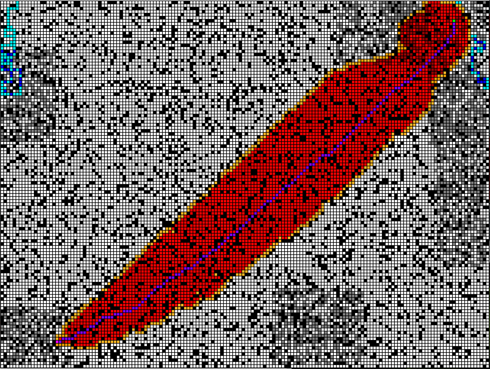
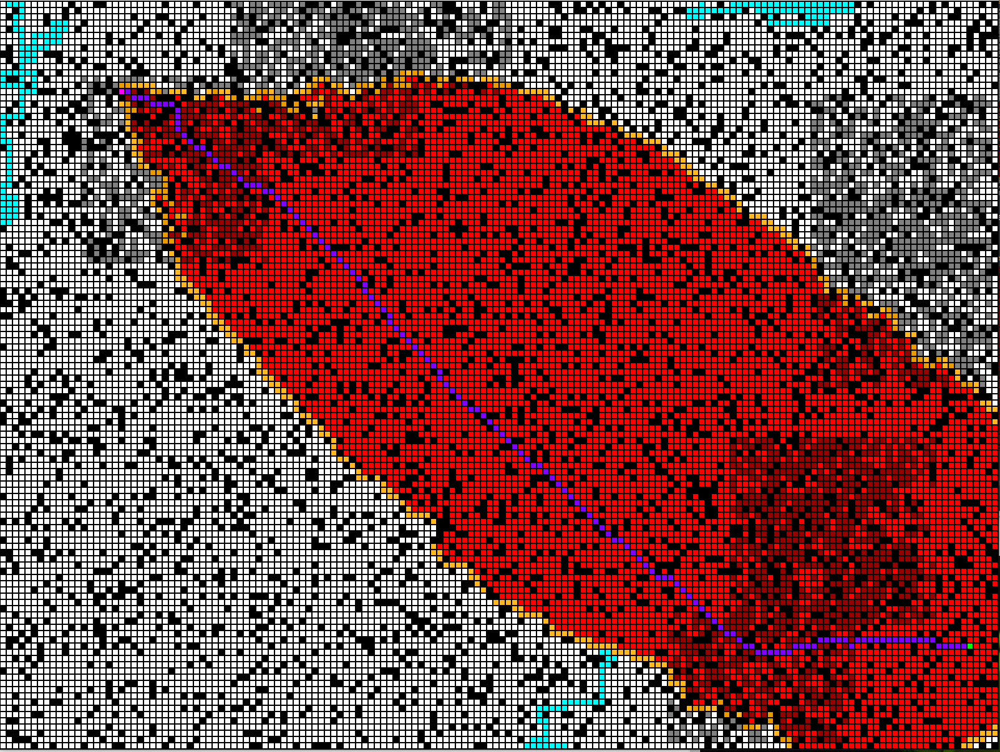
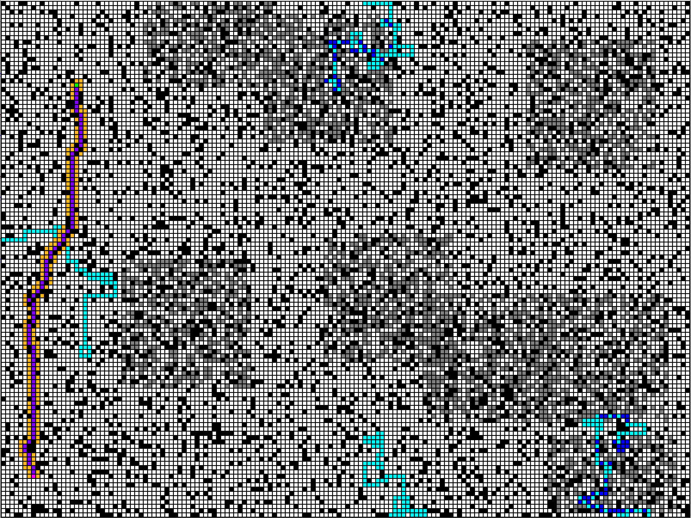
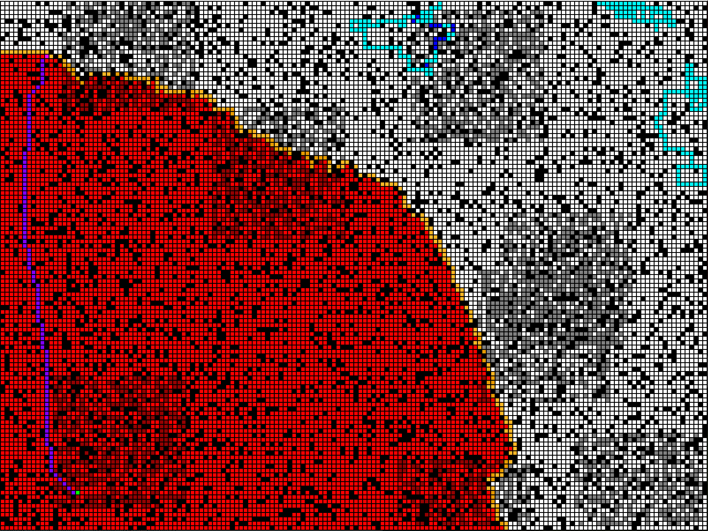

This page is for A* search. The purpose of A* search is to find the shortest or close to the shortest path from an origin point to a destination, by means of some heuristic.

The algorithm acts on every space adjacent to the start point, and checks which of these spaces is closest to the goal. It then checks every space adjacent to this new space, and so on until it finds a path to the goal.

However, the algorithm also takes into account how many spaces have passed from the start. This is to make sure that the route is truly efficient, compared to other potential routes. The weights of the heuristic vs the number of spaces passed can be changed, resulting in markedly different search trees.

vs

As shown above, very few spaces are considered when weight is given to the heuristic, while many spaces are considered when weight is given to spaces passed.
This project can be downloaded here.